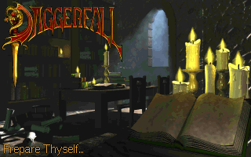

Chapter II: Daggerfall
Short summary
"Prepare to experience your new obsession." ―Tagline
The Elder Scrolls II: Daggerfall is the second installment in The Elder Scrolls series. It is set in the Iliac Bay area of High Rock and Hammerfell during the Third Era of Tamriel's history, ending in an event called the Warp in the West. The plot of the game revolves around the Mantella and Totem of Tiber Septim, which together can activate the Numidium.
The plot
"You wake and look around the room. Some hours ago, you were in a boat, en route to Daggerfall, when a storm of supernatural strength boiled over the Iliac Bay like a malefic creature. Your boat was destroyed, but you managed to swim through the churning water to a promontory rock. There you found a cave and escaped the fury of the storm. You had only just lit a small fire when a mudslide sealed you within. Your fear of being buried alive calmed when you saw the corridor leading out of the cavern. Perhaps there is a way out of this cave after all. Once free of the cave, you can begin the Emperor's quest." ―Intro, after character creation
Daggerfall is a city in the Breton homeland of High Rock. The player is sent here at the personal request of the Emperor. He wants the player to do two things. Firstly, the player must free the ghost of the late King Lysandus from his earthly shackles. Secondly, the player must retrieve a letter from the Emperor to a Blades spy in the court of Daggerfall. The letter reveals that Lysandus' mother, Nulfaga, knows the location of the Mantella, the key to resurrecting the first Numidium. The Emperor wants his spy to force Nulfaga into revealing the location of the Mantella so that the Blades can finish the reconstruction of the Numidium. Through a series of mishaps and confusions, the letter fell into the hands of an orc by the name of Gortworg. Gortworg, not knowing what the Mantella is, consults Mannimarco, the King of Worms (the leader of the Necromancers). During this time, the Underking, who originally destroyed the first Numidium because of its misuse by Tiber Septim, is recuperating deep within a tomb of High Rock, after expending so much energy destroying it the first time. In order for the player to give the Mantella to anyone, the player must kill king Lysandus' murderer and put his ghost to rest. After accomplishing this, the power of the Mantella restores the Underking's power.
Endings
Daggerfall has six different endings:
Continuity
Since Daggerfall had six very different endings, the writers of The Elder Scrolls series had to be creative when writing the sequel. It is revealed in books in the sequel The Elder Scrolls III: Morrowind that at the end of Daggerfall, an event known as the "Warp of the West" or "The Miracle of Peace" had occurred, that is, due to the fact that in order to retrieve the Mantella, the Hero of Daggerfall must enter Aetherius (a spirit realm), a disruption was caused in space-time, due to the fact that one of the very Gods of Aetherius (Akatosh) is the dragon god of time. Therefore, all of the endings of Daggerfall occurred simultaneously: the Hero is slain by the Numidium, the Kingdoms of Betony, Sentinel, and Wayrest are victorious, the "Bay Kings" and the Imperial forces are defeated by the Orcs, who then create their own kingdom of Orsinium, all of Tamriel is united under the Empire once again, the King of Worms becomes a god and another incarnation becomes the leader of the Order of the Black Worm, and the Underking is reunited with his heart. However, in Oblivion, treasure hunters claim to be hunting for treasure on behalf of Orsinium and Gortworg.
Planned content